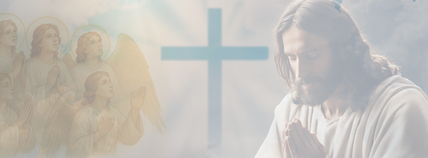

Toque Sobrenatural
Toque sobrenatural
Voltar
17 Acontecerá, nos últimos dias - é Deus quem fala -, derramarei do meu Espírito sobre todo ser vivo: profetizarão os vossos filhos e vossas filhas. Os vossos jovens terão visões, e os vossos anciãos chorarão.
18 Sobre os meus servos e sobre minhas servas derramarei naqueles dias do meu Espírito e profetizarão.
At 2, 17-18
E quando os ventos se movem
Um sinal aparece
Buscando a Deus sem demora
Uma teia se tece
Ele pega você
Mas você nem percebe
Ele espera o seu tempo
E os sinais florescem
A cada passo a Ele
Mais fortaleza se tem
E acaba os internos conflitos
Que os anjos digam Amém
É um processo contínuo
Começa com um passo e uma prece
Na direção de Deus
E o milagre se estabelece
Não tenha medo de ser de Cristo
Conheça Suas palavras de fé
Acredite que pode mudar
Que o sobrenatural acontece
O arrepio da Alma
Voltar
Como saber então
Que você foi tocado
Na minha simples opinião
Ocorre um arrepio arretado
É na hora da Santa Missa
Ou no quarto isolado
Isolado mas não sozinho
Pois com Deus ao seu lado
Ouvindo uma santa melodia
Com os pensamentos em Deus
Fazendo movimentos isnpirados
Com os Santos Anjos Seus
É muito massa ser de Cristo
Não tenho mais medo de dizer
Pois libertei-me das correntes
Que aprisionavam o meu ser
Cuspi fora a luxúria
Chutei o balde da bebida
Perseverei nesta cura
Foi uma santa conquista
E como dádivas divinas
Artefatos Espirituais eu ganho
E ficar mais forte na doutrina
Pra levar a todos o Seu Canto
Então digo agora
Para quem chegou até aqui
Ser de Cristo chegou a hora
Antes de chegar o fim.
Minhas 200 rosinhas
Voltar
¹ Apareceu em seguida um grande sinal no céu: uma Mulher revestida do sol, a lua debaixo dos seus pés e na cabeça uma coroa de doze estrelas.
² Estava grávida e gritava de dores, sentindo as angústias de dar à luz.
³ Depois apareceu outro sinal no céu: um grande Dragão vermelho, com sete cabeças e dez chifres, e nas cabeças sete coroas.
⁴ Varria com sua cauda uma terça parte das estrelas do céu, e as atirou à terra. Esse Dragão deteve-se diante da Mulher que estava para dar à luz, a fim de que, quando ela desse à luz, lhe devorasse o filho.
⁵ Ela deu à luz um Filho, um menino, aquele que deve reger todas as nações pagãs com cetro de ferro. Mas seu Filho foi arrebatado para junto de Deus e do seu trono.
⁶ A Mulher fugiu então para o deserto, onde Deus lhe tinha preparado um retiro para aí ser sustentada por mil duzentos e sessenta dias.
⁷ Houve uma batalha no céu. Miguel e seus anjos tiveram de combater o Dragão. O Dragão e seus anjos travaram combate,
⁸ mas não prevaleceram. E já não houve lugar no céu para eles.
⁹ Foi então precipitado o grande Dragão, a primitiva Serpente, chamado Demônio e Satanás, o sedutor do mundo inteiro. Foi precipitado na terra, e com ele os seus anjos.
¹⁰ Eu ouvi no céu uma voz forte que dizia: Agora chegou a salvação, o poder e a realeza de nosso Deus, assim como a autoridade de seu Cristo, porque foi precipitado o acusador de nossos irmãos, que os acusava, dia e noite, diante do nosso Deus.
¹¹ Mas estes venceram-no por causa do sangue do Cordeiro e de seu eloqüente testemunho. Desprezaram a vida até aceitar a morte.
¹² Por isso alegrai-vos, ó céus, e todos que aí habitais. Mas, ó terra e mar, cuidado! Porque o Demônio desceu para vós, cheio de grande ira, sabendo que pouco tempo lhe resta.
¹³ O Dragão, vendo que fora precipitado na terra, perseguiu a Mulher que dera à luz o Menino.
¹⁴ Mas à Mulher foram dadas duas asas de grande águia, a fim de voar para o deserto, para o lugar de seu retiro, onde é alimentada por um tempo, dois tempos e a metade de um tempo, fora do alcance da cabeça da Serpente.
¹⁵ A Serpente vomitou contra a Mulher um rio de água, para fazê-la submergir.
¹⁶ A terra, porém, acudiu à Mulher, abrindo a boca para engolir o rio que o Dragão vomitara.
¹⁷ Este, então, se irritou contra a Mulher e foi fazer guerra ao resto de sua descendência, aos que guardam os mandamentos de Deus e têm o testemunho de Jesus.
¹⁸ E ele se estabeleceu na praia.
Apocalipse 12:1-18
Site Bíblia Online
Rosa, as mais lindas rosas que há
Que a Deus clamo todo dia
Venho assim a Meu Deus orar
E a pedir a interseção de Maria
Pois ele está mais astuto
E tirando minhas forças ele tinha
Mas agora estou mais robusto
Depois das minhas 200 rosinhas
Mas o bicho é um perigo de fato
Parece que vencido já era
Mas tome bastante cuidado
Pois ele sempre ti espera
E assim peço novamente
A cada rogada rosinha
Que do inimigo livre a minha mente
E que eu encontre a minha florzinha
Visita de Elias?
Voltar
11 De repente, enquanto caminhavam e conversavam,
apareceu um carro de fogo, puxado por cavalos de fogo,
que os separou, e Elias foi levado aos céus num redemoinho.
2 Reis 2, 11
E num Encontro com o Salvador
Antecedeu-se uma visita
Um segundo antes da entrada do Senhor
Uma carruagem de fogo se antecipa
Cercada de anjos
Com certeza Ele estava
Para abençoar o Encontro
De quem ali trabalhava
Foi de arrepiar
Foi de muita emoção
Uma paz espalhou-se no ar
Com a visita do Sagrado Coração
E assim Deus nos visitou
Cercado de seus Santos Anjos
Aliviando toda a dor
E nos renovando para o Encontro
E foi dessa forma então
Que Ele provou para mim
Que lá na Santa Comunhão
Ele está com seu Amor sem fim
Desejo de não mais morrer
Voltar
Disse-lhe Jesus: Eu sou a ressurreição e a vida; quem crê em mim, ainda que esteja morto, viverá;
E todo aquele que vive, e crê em mim, nunca morrerá. Crês tu isto?
João 11:25,26
Anjo anjo meu
Me diga onde está Deus
Anjo, santo anjo do Senhor
Me conduza aonde Ele for
Uma jornada imensa
Deve ser nosso destino
Pois a nossa existência
Deixemos que Deus trace o caminho
Mas o quão longe será essa trilha?
Da fé dependerá
Que não seja uma mentira
Dela nunca se acabar
Daí vem A promessa
Que não tem outras iguais
A promessa de Cristo Jesus
Para aqueles que O trais
"Creia e Viva em mim caro menino
E não morrerás
Não peques e ande no Caminho
E não caia nas tentações de Satanás"
E dessa forma bem essa
É uma Linda promessa
Que Cristo Jesus prometeu
Para aqueles que não o trai
E sermos não ateu
Crer em Jesus até que é fácil
Mas como é Viver Nele?
Pois morrer não quero mais
Mas Viver Nele é tão difícil
Chega beirar o impossível
Mas aos poucos isso se revela
Parece que mais perto fica
"Orai e vigia meu filho
Para da tentação se livrar"
Ó meu Pai, meu Pai do céu
Ó minha mãe, minha mãe rainha
Envie anjos, santos anjos Seus
Para eu conseguir a imortalidade
Como prometeu meu Deus
Para quem nele Vive e Crer
Pois não quero mais morrer
Yeshua
Voltar
Aquele que habita no abrigo do Altíssimo e descansa à sombra do Todo-poderoso
pode dizer ao Senhor: Tu és o meu refúgio e a minha fortaleza, o meu Deus, em quem confio.
Ele o livrará do laço do caçador e do veneno mortal.
Ele o cobrirá com as suas penas, e sob as suas asas você encontrará refúgio; a fidelidade dele será o seu escudo protetor.
Você não temerá o pavor da noite, nem a flecha que voa de dia,
nem a peste que se move sorrateira nas trevas, nem a praga que devasta ao meio-dia.
Mil poderão cair ao seu lado, dez mil à sua direita, mas nada o atingirá.
Você simplesmente olhará, e verá o castigo dos ímpios.
Se você fizer do Altíssimo o seu refúgio,
nenhum mal o atingirá, desgraça alguma chegará à sua tenda.
Porque a seus anjos ele dará ordens a seu respeito, para que o protejam em todos os seus caminhos;
com as mãos eles o segurarão, para que você não tropece em alguma pedra.
Você pisará o leão e a cobra; pisoteará o leão forte e a serpente.
"Porque ele me ama, eu o resgatarei; eu o protegerei, pois conhece o meu nome.
Ele clamará a mim, e eu lhe darei resposta, e na adversidade estarei com ele; vou livrá-lo e cobri-lo de honra.
Vida longa eu lhe darei, e lhe mostrarei a minha salvação. "
Salmos 91:1-16
Como expressar então
O mais perfeito sentimento
Que há no meu coração
E nutre meu fogo com alimento
É por Você que eu faço tudo
Você é a razão do meu viver
Em Ti eu me sinto seguro
Não quero ficar mais longe de Você
Mas é preciso buscá-Lo a todo instante
Para da tentação afastar
Pois existe o mau tão grande
Que se avança pelo o ar
Você veio pra nos proteger
Para perdoar nossos pecados
Mas os Seus não aceitaram Você
E foi logo flagelado
Mas então eu digo agora
Recito mais este poema
Pois eu peço sem demora
Que cure nossos problemas
Pois assim não quero mais
Viver nessa agonia
Dos horrores de Satanás
Que nos corrompe todo dia